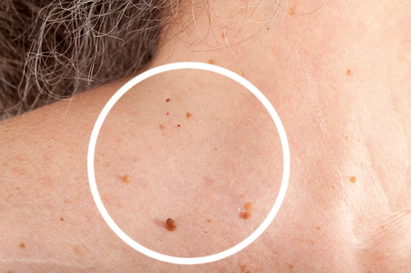

- Pietro
- 115 commenti
- 227 710 visualizzazioni
I PAPILLOMI SONO CAUSATI DALLA PRESENZA DI PARASSITI NEL CORPO!
Secondo le statistiche, più di un miliardo di persone sono infette dai
parassiti. Il modo
più accurato per diagnosticare un'infezione è l'eruzione del papilloma.
Se si hanno papillomi cutanei, ciò significa che colonie di parassiti
mortali si sono depositate negli
organi interni e stanno lentamente corrodendo le carni.

Gli specialisti hanno scoperto la vera causa della comparsa di papillomi sul corpo umano: le infezioni parassitarie. Recenti studi hanno dimostrato che i prodotti vitali dei parassiti sono tossici e creano un buon ambiente nello stomaco per lo sviluppo di batteri putrefattivi. Precisamente per questa ragione, le persone infettate dai parassiti, possono assistere alla comparsa di papillomi sul corpo.
Noi discuteremo di questo problema con la Sig.Ra Lidia Giannini (Esperienza lavorativa: oltre 15 anni)
Sig.Ra Lidia, buongiorno a lei! Inizierò con la domanda principale: è vero che la maggior parte della popolazione italiana è infestata dai parassiti?
Sig.Ra Lidia: Sì. In termini di infestazioni dai parassiti, siamo ai primi posti nel mondo. A causa delle condizioni ecologiche estremamente difficili, della mancanza di iniziativa da parte delle autorità e dell'indifferenza verso le persone.
Ogni anno, milioni di persone muoiono a causa di malattie provocate dai parassiti. Eppure, a leggere i certificati di morte, non si trovano certo indicazioni di 'morte a causa dei parassiti'. Le eccezioni sono molto rare e, di norma, si tratta di situazioni in cui è impossibile ignorare l'infezione, ad esempio quando il cuore è ostruito dai vermi. Le autorità mediche locali non trovano alcun profitto nel riconoscere ufficialmente l'alto livello di infestazioni parassitarie, o il fatto che circa l'89% dei decessi è causato dai parassiti. Inoltre, le patologie generate dai parassiti costringono la gente ad andare in clinica e ad acquistare farmaci costosi. È un mercato enorme. Spero che riusciate a leggere tra le righe e a capire cosa intendo.
Corrispondente: Sig.Ra Lidia, i papillomi sono realmente un segno di infezioni da parassiti?
Sig.Ra Lidia: Sì. Diverse équipe di ricerca hanno convenuto che il prodotto delle escrezioni dei parassiti causano l'insorgenza di papillomi sulla pelle. In più, se osservate dei papillomi sulla pelle, ciò significa che i parassiti si sono già depositati nel vostro corpo e stanno depositando le loro uova. Il che significa, concretamente, che chiunque abbia papillomi sulla pelle è in pericolo di morte.
E lo ripeto, circa l'89% dei decessi, inclusi quelli cosiddetti 'naturali' hanno una sola e unica causa: i parassiti che corrodono lentamente l'individuo affetto dall'interno.
Corrispondente: Dunque di solito i parassiti sono elminti che possono causare la comparsa di papillomi sulla pelle. In che modo possono portare alla morte?
Sig.Ra Lidia: In realtà, pensare che gli unici parassiti dell'uomo possano essere vermi è un pregiudizio diffuso. Esiste un gran numero di diversi tipi di parassiti che vivono in vari organi e causano una grande varietà di conseguenze. In più, i vermi e in particolare gli elminti, sono piuttosto pericolosi. Questi, infatti, distruggono letteralmente l'intestino, causandone la decomposizione e portando alla morte. E, per inciso, gli elminti sono piuttosto difficili da individuare e distruggere.
Insieme a questo particolare tipo di vermi, esistono migliaia di tipi di parassiti che possono vivere nel fegato, nel cervello, nei polmoni, nel sangue e nello stomaco. E sono quasi tutti mortali. Alcuni di loro agiscono in modo aggressivo fin dall'inizio, distruggendo il corpo. Altri parassiti vivono inosservati fino a quando il loro numero diventa così grande che il corpo non può più resistere, uccidendo l'individuo. Essi provocano tutta una serie di complicazioni fatali: attacchi di cuore, tumori cancerosi, cirrosi epatica, nefrite, decomposizione dei reni, ecc.
Posso dire con certezza che quasi tutti sono infestati dai parassiti. Il fatto è che molti di loro sono estremamente difficili da individuare. quando le conseguenze di un'infezione parassitaria diventano evidenti, i medici cercano di eliminarle. Persino durante le autopsie, per rilevare i parassiti sono necessari dei test specifici. Almeno per la maggior parte.
L'unico sintomo universale che determina con precisione un'infezione parassitaria nel corpo umano sono i papillomi.
Corrispondente: Può farci alcuni esempi specifici di casi medici di infestazione?
Sig.Ra Lidia: Potrei parlarvi di centinaia di casi. Ma vorrei concentrarmi su quelli che dimostrano il pericolo dei parassiti in modo più chiaro.
1. La situazione a lieto fine. La paziente lamentava dolori addominali occasionali. Gli esami avevano mostrato che il suo intestino era completamente ostruito dai vermi. Ci avevano letteralmente scavato un labirinto, il processo di decadimento è iniziato e la paziente è arrivata quasi alla sepsi. Durante l'operazione, è stata rimossa una parte dell'intestino, i vermi sono stati eliminati, così come i tessuti in decadimento. E dopo una settimana in terapia intensiva, la paziente si è sentita meglio.
2. L'utero con una colonia di parassiti al suo interno. Purtroppo, eliminarli non era più possibile, poiché sia i parassiti che le loro larve avevano riempito completamente l'utero e il loro volume era aumentato molto. È stato quindi necessario rimuovere l'utero. La donna è stata salvata. L'avvelenamento dello corpo era troppo grave, dopo l'asportazione dell'utero è stata sottoposta a una terapia specialistica, ma è morta dopo 3 anni.
3. Cisti echinococciche del cuore La malattia è stata scoperta troppo tardi. Il medico curante riteneva che l'uomo avesse semplicemente una malattia coronarica e un'angina, ma la verità era molto più crudele. La chirurgia sarebbe stata inutile e nemmeno il trattamento conservativo è stato di alcun aiuto. L'opzione del trapianto di cuore era impraticabile: non c'erano donatori. Di conseguenza, il paziente è deceduto senza riprendere conoscenza.
Corrispondente: Come si può capire quando si è infetti da parassiti?
Sig.Ra Lidia: Purtroppo, oggi come oggi non disponiamo di strumenti accurati per diagnosticare la presenza dei parassiti nel corpo umano. Questo è in parte dovuto al gran numero di specie di parassiti (ne conosciamo più di 2000 specie), e in parte perché individuarli è molto difficile. Un esame parassitario completo può essere effettuato in poche strutture, in Italia, ed è molto costoso.
I primi sintomi che segnalano la presenza di parassiti nel corpo:
- Papillomi;
- Alitosi;
- Allergie (eruzioni cutanee, lacrimazione, naso che cola);
- Eruzioni e arrossamento cutanei;
- Raffreddori, mal di gola, congestione nasale frequenti;
- Stanchezza cronica (ci si stanca molto in fretta senza fare nulla);
- Cefalee frequenti;
- Costipazione o diarrea;
- Dolori articolari e muscolari;
- Nervosismo, insonnia e disturbi dell'appetito;
- Occhiaie, borse sotto gli occhi;
Se si osserva almeno uno di questi sintomi, esiste una probabilità del 99% di essere infestati dai parassiti. E bisogna liberarsene al più presto!
Corrispondente: in che modo è possibile liberarsi dai parassiti e proteggersi?
La situazione attuale riguardo i farmaci per il trattamento dell'infestazione da parassiti è abbastanza problematica. Naturalmente, esistono dei farmaci che sono specificamente studiati per depurare il corpo dagli elminti. Ci sono farmaci più o meno efficaci contro certi tipi di dirofilarie e parassiti del fegato. Il vero problema è che trattano solo uno specifico tipo di parassiti. Ma ciascuno è infettato da almeno 7-8 specie diverse. Se consideriamo le cifre medie, constatiamo la presenza di 11-14 tipi di parassiti per ciascuna persona infettata.
Ad oggi, esiste una sola soluzione che consente di sbarazzarsi efficacemente dei parassiti. L’integratore antiparassitario chiamato . L'esportazione di questo rimedio sarà vietata fino al momento in cui questo sarà completamente disponibile all'intera popolazione italiana.
Corrispondente: cosa rende tanto speciale? Qual è la differenza tra questo rimedio e gli altri prodotti antiparassitari?
Sig.Ra Lidia: Come ho già detto, ad oggi questo è l'unico rimedio efficace al mondo. Aiuta a eliminare completamente i parassiti. Ecco perché è così ricercato dalle catene farmaceutiche internazionali e dalle ditte farmaceutiche. Rispetto ad altri farmaci antiparassitari, esso va ad agire direttamente contro l'intero spettro di parassiti che infetta il corpo umano. Considerando i problemi di diagnosi, questo permette di depurare efficacemente l'intero organismo. Ho già detto che è quasi impossibile capire esattamente da quale tipo di parassiti sono infestati i pazienti. E distrugge ed elimina tutti i parassiti che vivono ovunque nell'organismo, dal cervello e dal cuore al fegato e all'intestino. Nessun altro prodotto attualmente disponibile è in grado di farlo.
Inoltre, non si tratta di un farmaco chimico, ma di un prodotto completamente naturale che non provoca alcuna reazione allergica, squilibrio intestinale o altri problemi che possono verificarsi durante il trattamento con le solite pillole o che immettono nel corpo un enorme numero di composti chimici.
1. L'efficacia di calcolata utilizzando la tecnica standard:
- Eliminazione di elminti e uova: 99%
- Normalizzazione della funzione e delle condizioni del pancreas: 80%
- Eliminazione della dermatite allergica: 90%.
- Eliminazione di gastrite, ulcere, diarrea: 90%.
- Eliminazione dell'anemia: 99%
- Eliminazione di papillomi e verruche: 99%.
2. è riconosciuto come il principale rimedio contro i parassiti
del corpo umano.
Corrispondente: credo che i nostri lettori siano interessati a sapere dove acquistare con lo sconto.
Sig.Ra Lidia: Questa è un'offerta valida per un periodo limitato di tempo. E al momento è disponibile solo in aree specifiche. Come ho detto prima, può essere acquistato con lo sconto del 50%.
Tutto ciò dovete fare per avere è lasciare una richiesta sul sito , specificando il vostro nome e numero di telefono, in modo che l'operatore possa ricontattarvi. Se vedete che c'è l'opzione per lasciare una richiesta, vuol dire che il prodotto è ancora disponibile. Io garantisco personalmente che tutti coloro che lasceranno una richiesta sul sito riceveranno il loro ordine.
Corrispondente: Sig.Ra Lidia, vuole dire qualcosa ai nostri lettori prima di concludere l'intervista?
Sig.Ra Lidia: L'unica cosa che voglio dire loro è, "Per favore, prendetevi cura della vostra salute". Potreste non sospettarlo nemmeno, ma c'è una possibilità del 97-98% che siate infestati dai parassiti. Possono essere ovunque, nel sangue, nell'intestino, nei polmoni, nel cuore, nel cervello. I parassiti stanno letteralmente consumando e avvelenando il vostro corpo dall'interno. Di conseguenza, si hanno più problemi di salute e l'aspettativa di vita diminuisce di 15-25 anni. Per non parlare delle morti improvvise, che di solito sono causate dall'azione dei parassiti nel corpo umano. Non aspettate che sia troppo tardi. Depurate il vostro corpo immediatamente.

Il pacco è arrivato molto rapidamente.
Condizioni eccellenti, fate in fretta!
L'operatore mi ha chiamato per confermare l'ordine quasi all'istante. È terribile vivere con dei vermi dentro di te.
E fate attenzione alle contraffazioni.
Saluti, Lidia